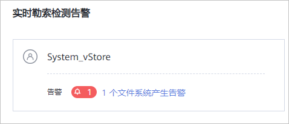
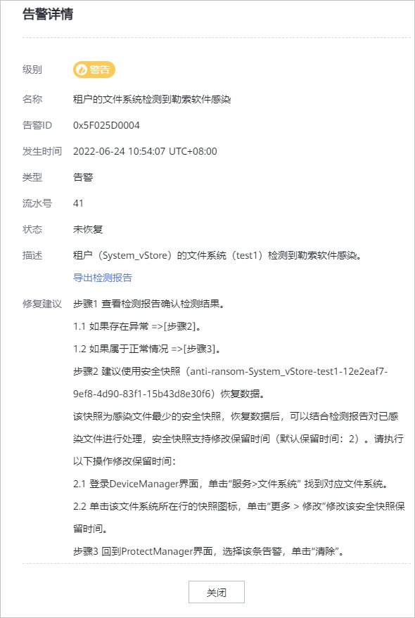
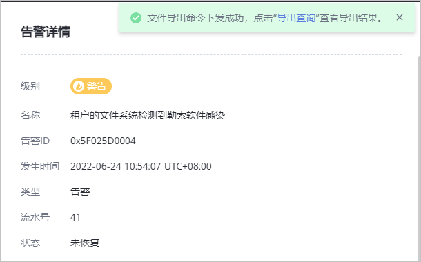

查看实时勒索检测结果
参考本节操作查看实时勒索检测结果。
操作步骤
- 选择。
- 在“实时勒索检测告警”页面，查看告警情况。
- 无告警信息：界面上无告警信息。

- 有告警信息：界面提示文件系统产生了告警。

- 当存在告警信息时，执行以下步骤查看告警信息。
- 单击告警信息，进入“告警和事件”页面。
- 找到对应告警，单击告警描述，告警详情中展示了检测到勒索软件感染的租户和文件系统。单击“导出检测报告”。

- 填写“导出后的文件名称”，单击“确定”。系统弹出“文件导出命令下发成功”的提示。

- 单击“导出查询”，选择最新的检测报告，单击。
- 报告下载完成后，推荐使用记事本打开。报告中“file”列，给出了文件系统名称，以及检测到勒索软件感染的文件信息。
版权所有 © 华为技术有限公司